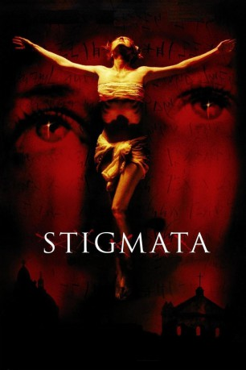
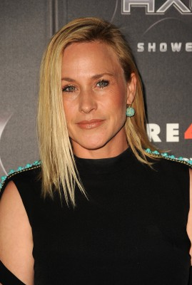
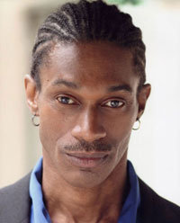

#5977 Stigmata
 
 IMDB-Wertung: 6.2 / 10
IMDB-Wertung: 6.2 / 10  Tomatometer: 22
Tomatometer: 22  Metascore: 0
Metascore: 0 
Die lebenslustige Frankie bekommt eines Tages von ihrer Mutter einen Rosenkranz geschenkt - ein Präsent, das ihr Leben für immer verändern wird. Denn plötzlich wird Frankie Opfer übernatürlicher Mächte, wird von Krämpfen geschüttelt und beginnt, aus Wunden an den Handgelenken zu bluten. Der Vatikan beauftragt den Priester und Wissenschaftler Andrew Kiernan damit, das Phänomen zu untersuchen. Dieser erkennt schon bald, dass sich Frankie in Lebensgefahr befindet. Doch da entbindet der Vatikan Kiernan wieder von seinem Auftrag...
Jahr: 1999
Dauer: 102 Minuten
FSK: 16
Land: USA Studio: MGMTonspuren: DD5.1 - ,
Untertitel: Deutsch, Englisch,
Auflösung: 1080p (1920x848) Größe: 9226 MB
Genre: Horror
Regisseur: Rupert Wainwright
Drehbuch: Joey Sagal
Soundtrack:
Darsteller:
-  Patricia Arquette als Frankie Paige
 Gabriel Byrne als Father Andrew Kiernan
Gabriel Byrne als Father Andrew Kiernan Jonathan Pryce als Cardinal Daniel Houseman
Jonathan Pryce als Cardinal Daniel Houseman Nia Long als Donna Chadway
Nia Long als Donna Chadway Thomas Kopache als Father Durning
Thomas Kopache als Father Durning Rade Serbedzija als Marion Petrocelli
Rade Serbedzija als Marion Petrocelli Enrico Colantoni als Father Dario
Enrico Colantoni als Father Dario- Dick Latessa als Father Gianni Delmonico
- Portia de Rossi als Jennifer Kelliho
- Patrick Muldoon als Steven
 Ann Cusack als Dr. Reston
Ann Cusack als Dr. Reston Shaun Toub als Doctor
Shaun Toub als Doctor- Valarie Trapp als Woman with a Baby
- Frankie Thorn als Donna's Customer
- Mariah Nunn als Sister Angela
 Tom Fahn als MTA Man
Tom Fahn als MTA Man- Jack Donner als Father Alameida
 Richard Conti als Valet Priest
Richard Conti als Valet Priest- Mary Linda Phillips als Sister Agnes
- Mark Adair-Rios als Deacon
- Stephanie Carwin als Italian Hooker , uncredited
- Mário Lara als Vatican Priest , uncredited
-  LeJon als Homeless Man , uncredited
- Tom Hodges als ER Nurse
- Lydia Hazan als Attending Nurse
- Shaun Duke als Dr. Eckworth
- Kessia Embry als Cheryl
- Marilyn Pitzer als Homeless Woman
- Liz Cruz als Waitress
- Faith Christopher als Waitress
- Joe Ruffo als Guard
- Federico Scutti als Guard
- William Howell als Aerialist
- Kristopher Davis als Aerialist
- Devin Unruh als Flower Boy
- Vera Yell als Jennifer's Customer
- Mary Marshall als Nun
- Daniel Escalzo als Italian Businessman
- Michael P. Dearth als Italian Businessman
- Anthony Garibaldi als Vatican Priest , uncredited
Datei: X:\1999\Stigmata (1999, FSK16, 1920x848).mkv seit 16.04.2017
Festplatte: HD 1996-2002
 Es gibt insgesamt 81 Filme in der Gruppe '1999'
Es gibt insgesamt 81 Filme in der Gruppe '1999'